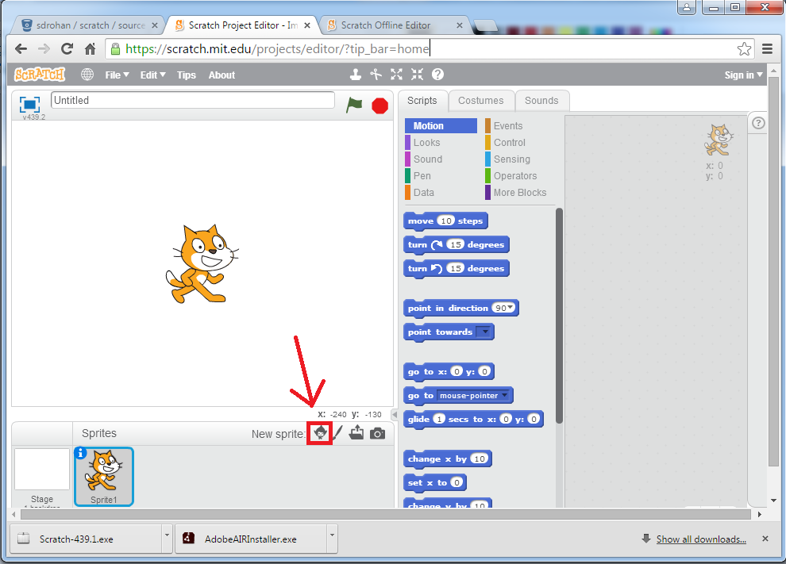
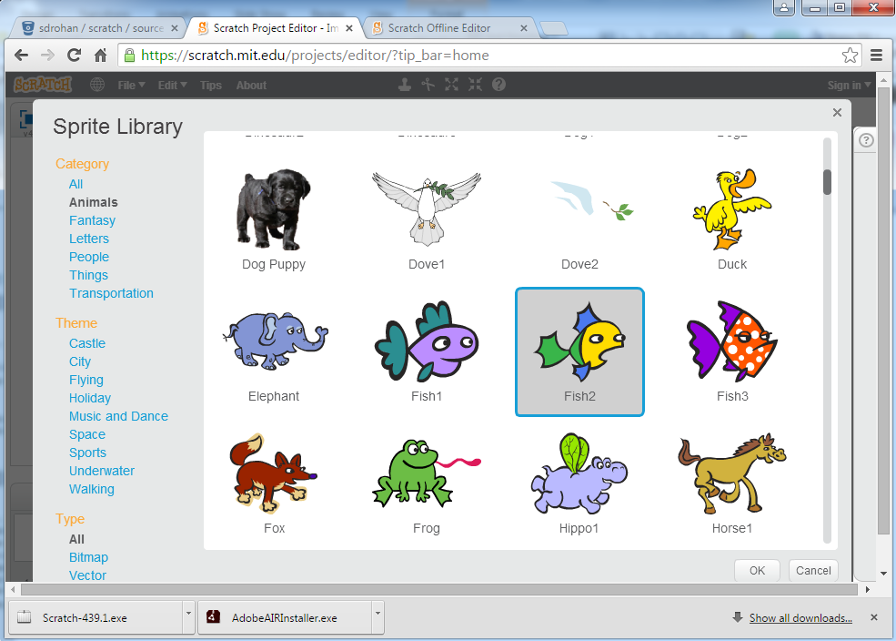
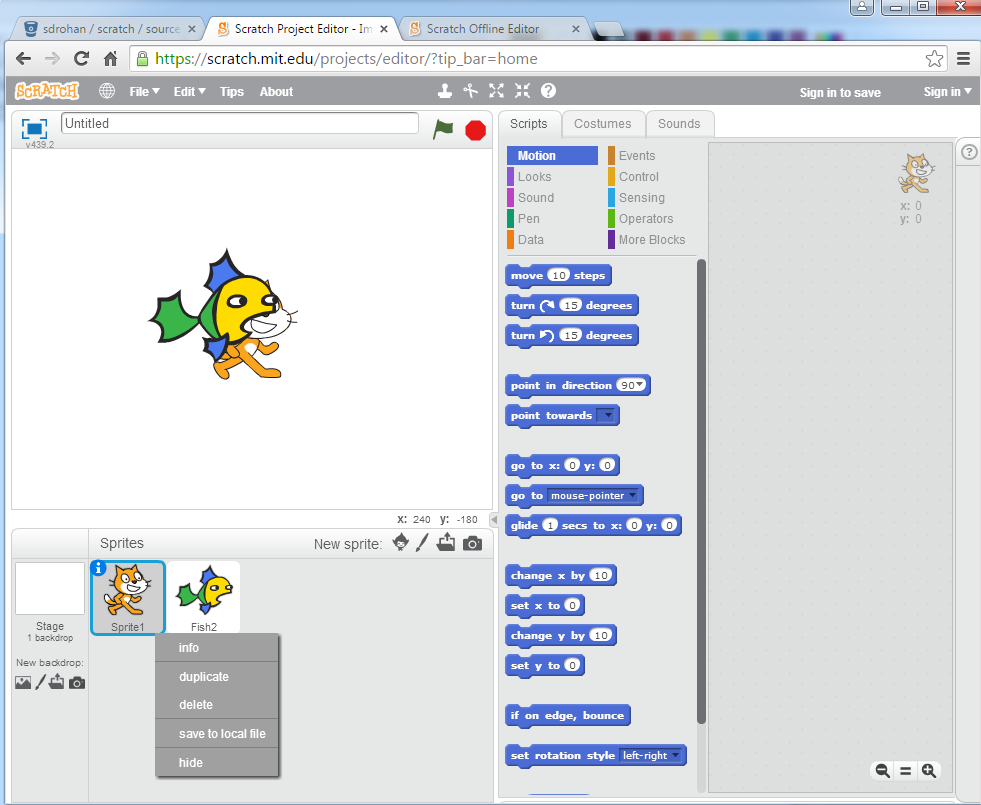
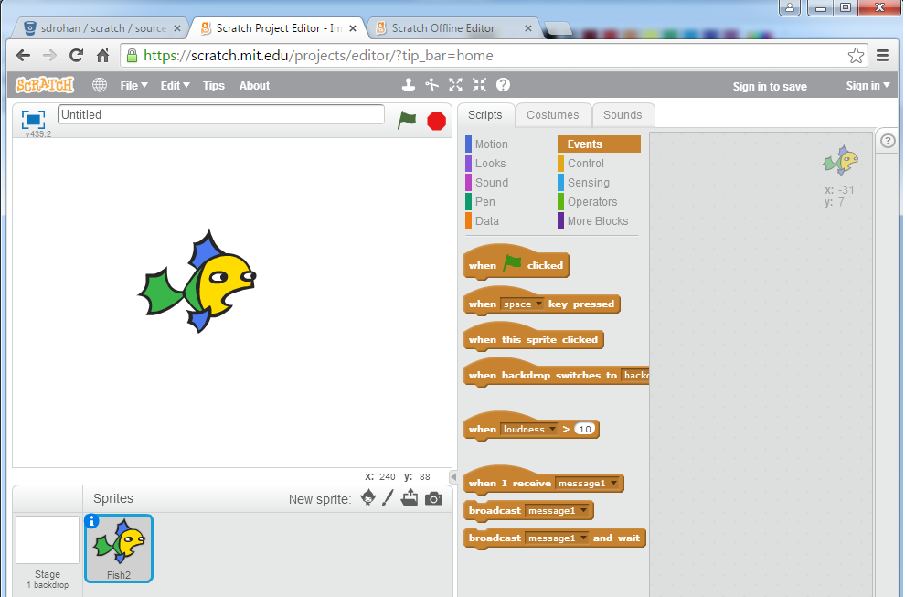
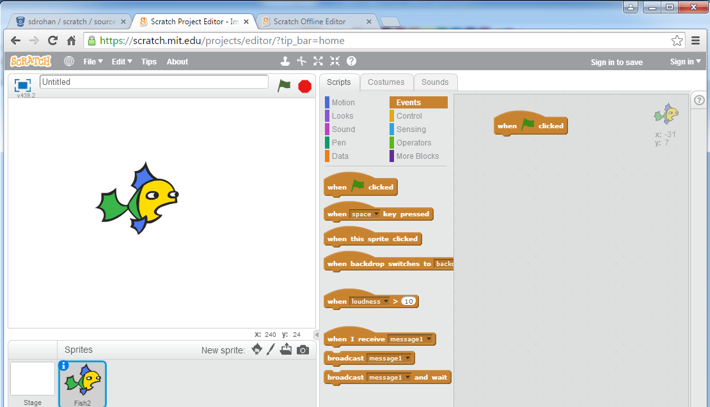
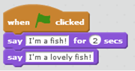
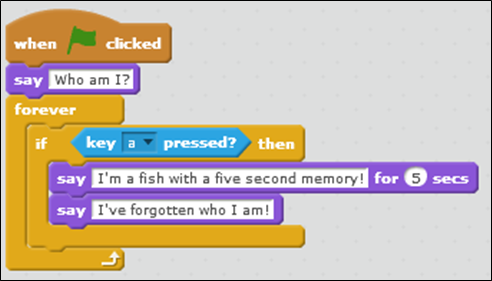
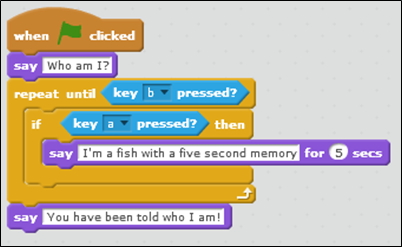

On completion of this lab you should be familiar with using Scratch to write simple programs demonstrating flow of control (i.e. Sequence, Selection and Iteration) and basic event handling.
Your lecturer will show you how to open up the Scratch editor.
With the editor open, you will work on the SomethingFishy1 exercise from lectures.


You will now have two sprites...the cat and the fish.
Right click on the cat sprite (as shown in the screen shot below) and select delete from the context-sensitive menu.






Create a new Scratch project.
Using a bat sprite, write the following program:
The solutions for this lab are here.
They will download in zip format and will need to be unzipped to see the individual files.